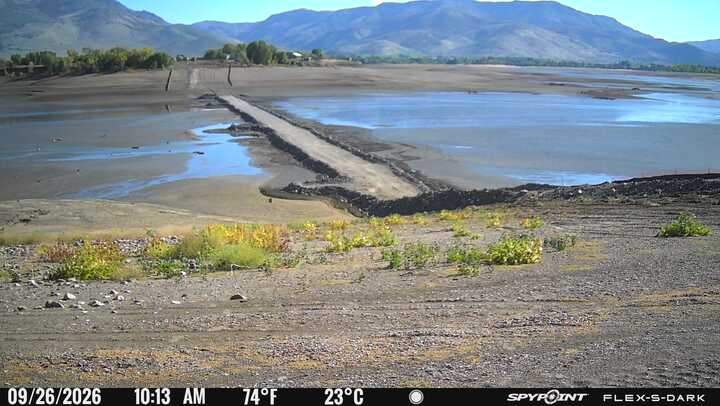
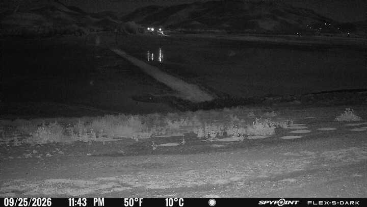

📷 Construction Site Camera
Pineview Reservoir Pipeline Crossing — live photo feed and rolling timelapse from the job site.
Pineview Crossing


Loading feed status…
Camera captures every 30 minutes · SPYPOINT Flex-S-Dark
Media use: Photos and timelapse footage from this camera may be used in broadcast or online media provided they are credited — "Courtesy of Ogden City Engineering."